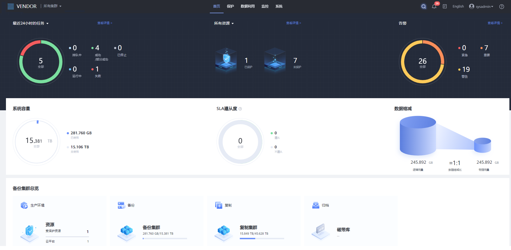
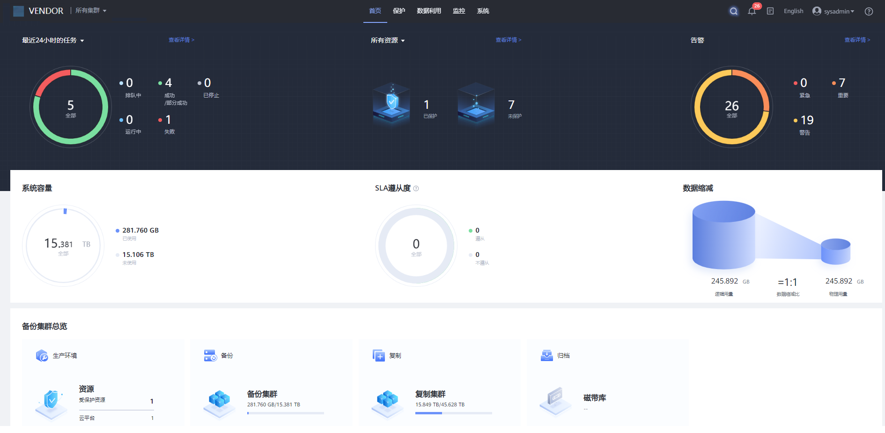

通过查看首页信息，了解任务的状态、管理的资源、告警、容量使用情况、SLA遵从度、数据缩减、容量趋势和系统历史性能。
- 本产品 1.5.0版本的主界面

- 本产品 1.6.0版本的主界面

- 不同版本和型号的界面可能会有少许差异，界面展示的信息请以实际界面为准。
- 当资源的所有副本被删除后，资源副本所在的文件系统也将被删除，系统会自动回收文件系统空间。如果已使用容量与实际不符，可能由于已删除的文件系统空间还未被回收，请手动回收空间。手动回收空间的操作，请参见手动回收空间。
通过查看首页信息，了解任务的状态、管理的资源、告警、容量使用情况、SLA遵从度、数据缩减、容量趋势和系统历史性能。
